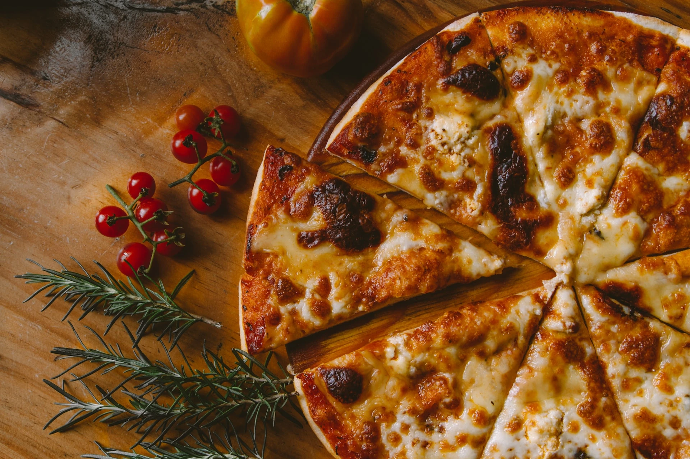
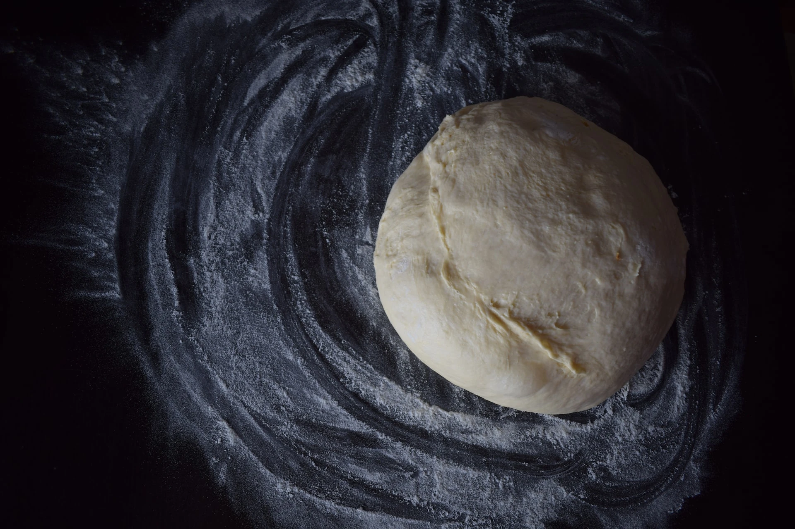
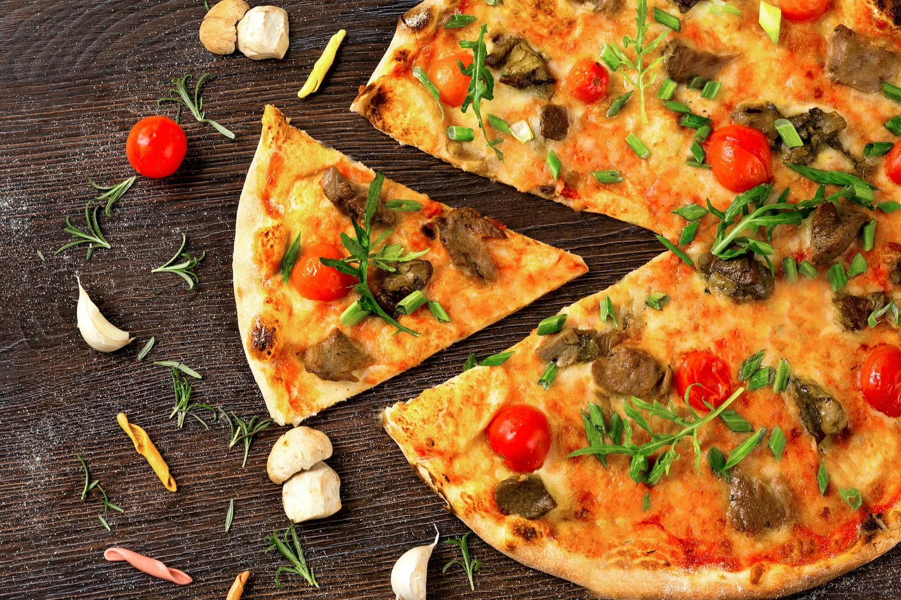

Nasza specjalnością jest pizza - zawsze ręcznie wyrabiana i przygotowana wyłącznie na bazie świeżego, naturalnego ciasta.
W naszym menu, coś dla siebie znajdą zarówno miłośnicy klasyki, jak i osoby szukające w pizzy nowych, nietypowych smaków.
Pizzeria "Po studencku" to niezapomniany smak, pysznych i gorących pizz, którymi możesz cieszyć się każdego dnia i w każdym, wygodnym dla ciebie miejscu.

Na czym polega sekret naszego ciasta?
Na tym, że ono jest naturalne, świeże i ręcznie wyrabiane oraz, że nie mrozimy i nie przygotowujemy ciasta na zapas. Ciasto wyrabiamy z najwyższej jakości mąki, bez używania żadnych konserwantów i ulepszaczy.
Po otrzymaniu zamówienia każda z naszych pizz jest ręcznie formowana przez naszych pracowników specjalnie dla Ciebie i ze składnikami jakie wybierzesz.
Wkładamy dużo wysiłku i starań w to, żeby nasze ciasto było jak najlepsze - począwszy od starannego doboru i kontroli składników ciasta, poprzez jego codzienną jego produkcję, aż po regularne oraz częste dostarczanie świeżego ciasta do naszych pizzerii.

Kulinarna różnorodność otaczającego nas świata to niewyczerpane źródło inspiracji dla naszych pizz – od smaków orientu, poprzez wyszukany włoski styl, aż po solidną prostotę kuchni niemieckiej, wszędzie można znaleźć pomysł na nowy smak pizzy.
Każda z naszych pizz to kulinarna przygoda, mała podróż w czasie i w przestrzeni - czy to w odległe kraje, czy to w góry, czy na … jesienne grzybobranie.
To właśnie umiejętny i staranny dobór składników, połączony z kreatywnością i otwartością na smaki świata, jest oprócz naszego wyjątkowego ciasta, największym sekretem naszych pysznych pizz, przygotowanych po to by zaspokoić nawet najbardziej wysublimowane gusta naszych klientów.